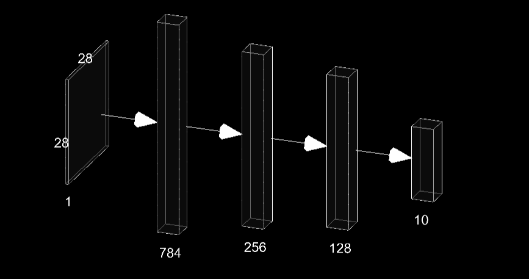

The MNIST dataset is a well-known benchmark in the field of machine learning and deep learning, commonly used for evaluating algorithms designed for image classification tasks. It consists of 70,000 grayscale images of handwritten digits (0–9), each sized 28x28 pixels. This dataset is split into 60,000 training images and 10,000 testing images, making it an ideal starting point for experimenting with image-based neural networks. In this implementation, a deep learning model is constructed using PyTorch, a popular machine learning library. The model architecture, represented by the Model class, is a fully connected feedforward neural network designed to classify digits in the MNIST dataset.
Model Architecture
Results
The model's performance improves during training and validation, eventually stabilizing with a training accuracy of approximately 76.02% and a validation accuracy of 84.74%.

Application
Try out the deployed application by hand drawing digit on canvas see if you get correct predicted output.